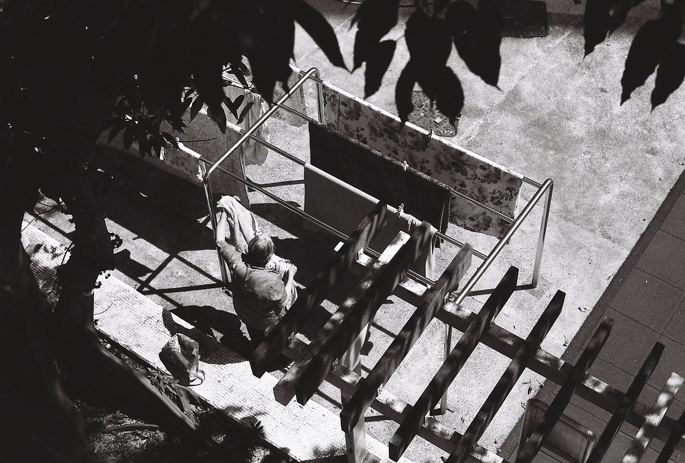

底片拍坏了怎么办？漏光、欠曝、划痕、发灰，一篇说清怎么救、怎么防
拍胶片最贵的不是胶卷，是拍完之后发现全废了。一卷胶卷连同冲扫，少说一百多块，加一周的期待——结果打开扫描件，全是灰的、全是划痕、或者干脆漏成一片白光。
这篇不讲理论，只讲你在家能看出来的东西：一眼判断是相机的问题、冲扫的问题、还是你自己的问题；哪些能救；以及下次怎么防。
一、先学会这一招：看「坏在几张上」
所有排查都从这一个问题开始——这一卷里，是每一张都坏，还是只有几张坏？
记住这一招，你就能省掉一半的扯皮。 店家最容易糊弄的就是「不知道哪儿的问题」，而这张判断表能让你把话说清楚。
二、漏光：怎么判断是相机还是自己弄的
漏光分两种，长相完全不同：
怎么确认：拿一卷最便宜的卷，在明亮处把相机静置半小时（别装进暗袋），然后整卷冲出来。如果每张同一位置都有光晕，就是相机漏光；如果干干净净，那就是之前你自己碰的。
能救吗：轻度漏光（只是边缘一层薄雾）在扫描时拉一下曲线就能救回来大半；如果烧穿了画面主体，那就只能认。所以先别急着扔底片，拿给别家店扫一遍试试，有时候差别很大。

三、欠曝（拍出来太暗）：彩负能救，反转片基本救不回
这是新手最常犯的错，也是最容易误解的：「欠曝一点点」和「欠曝到死」是两回事。
能救吗：欠曝 1–2 档的彩负，扫描时提亮 + 单独调暗部通常能出可用的照片，但你会看到颗粒变大、暗部偏色。欠曝 3 档以上，基本只剩「记录」价值。
怎么防：两个土办法最有效——一是宁可过曝一点也不要欠曝（彩负是这样），二是学会用相机测光表的「点测」测人脸，而不是让相机对着整个画面平均。
四、划痕和灰尘：先分清是冲刷出来的还是你自己刮的
能救吗：灰尘最容易被救 —— 很多店扫的时候清一次、或者你拿气吹再扫一遍就干净了。划痕也能修：Photoshop 的「污点修复画笔」在小划痕上非常好用；深到穿透乳剂的划痕就只能修图。
怎么防：最重要的一条——底片一定要拿回来。别让店「只给电子版不还底片」。底片是你的，丢了就真的没了。

五、发灰、发闷、颜色脏：这八成不是胶卷的问题
很多人拿到扫描件第一反应是「这卷不行」，然后换卷、换店、怀疑人生。但发灰最常见的原因是扫描和后期，不是胶卷。
结论：老玩家那句「同一卷底片，换个地方扫，能差出一个滤镜的距离」是真的。在怀疑胶卷之前，先换一家店扫一遍同一条底片。
六、过期卷：能拍，但要按这个规矩来
胶片最贵的一课，都是用废掉的一卷换来的。
七、《送店前必说清楚的三句话》（直接抄）
提前说清楚，比事后吵架有用一百倍。 能耐心回答这三句的店，水平通常不会太差。
八、最后：不是每一步都能救，这很正常
我见过太多人因为「一卷废了」就退坑了。但说实话——漏光、划痕、灰、偏色，本来就是胶片的另一半。 有人花钱去滤镜里加漏光效果，你用一卷过期卷就白得了。
你真正需要建立的只有两个习惯：一是先判断「坏在几张上」（这一招能解决一半焦虑），二是底片一定拿回来（这是唯一不可逆的损失）。剩下的，都是可以慢慢学的手艺。
数据来源
本文综合公开社区经验与厂商公开资料整理（Reddit r/AnalogCommunity 漏光排查讨论、胶片保存常识、林好夫/菲林中文关于冰箱保存、国内冲扫行情报道）。曝光宽容度、过期降感档数均为常见经验值，不同乳剂差异很大，以实际测试为准。
你在哪一步翻过车？
留言报个现象 + 当时用的卷和店，让后面的人少走一次弯路：漏光、欠曝、划痕、发灰、过期——你踩过哪一个？最后怎么解决的？
这几卷容错度高，适合新手练手
Fomapan 100 Classic（便宜练手） XP2 Super（唯一能 C-41 冲的黑白） Double-X 5222（电影卷 · ECN-2） Fomapan 400 Action（平价高速）
去胶卷库看看这几卷
「胶卷档案」是一个可搜索的胶卷资料库：每卷都有规格、特性、使用感受、参考价与实拍样片。搜品牌或型号就能直达。